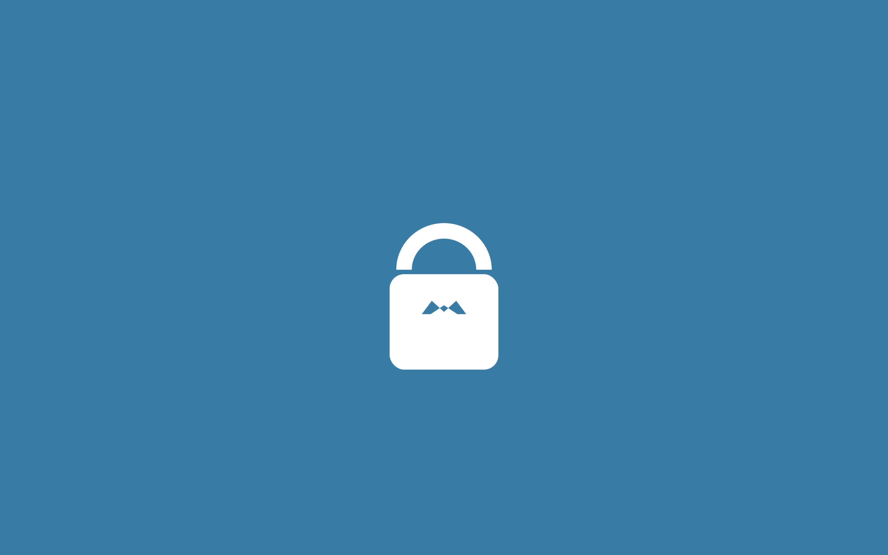
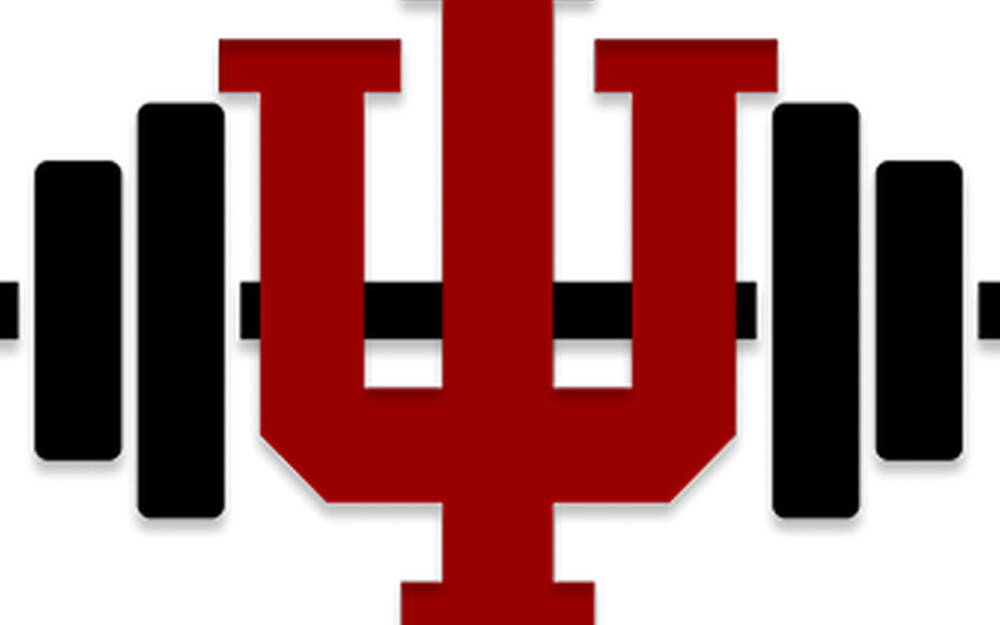
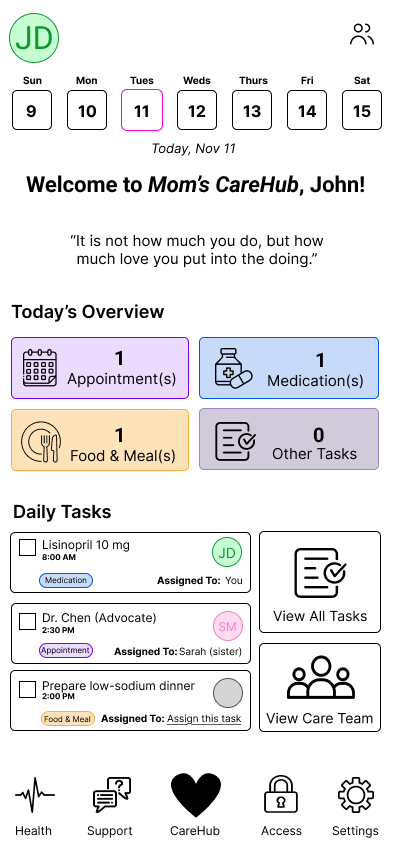
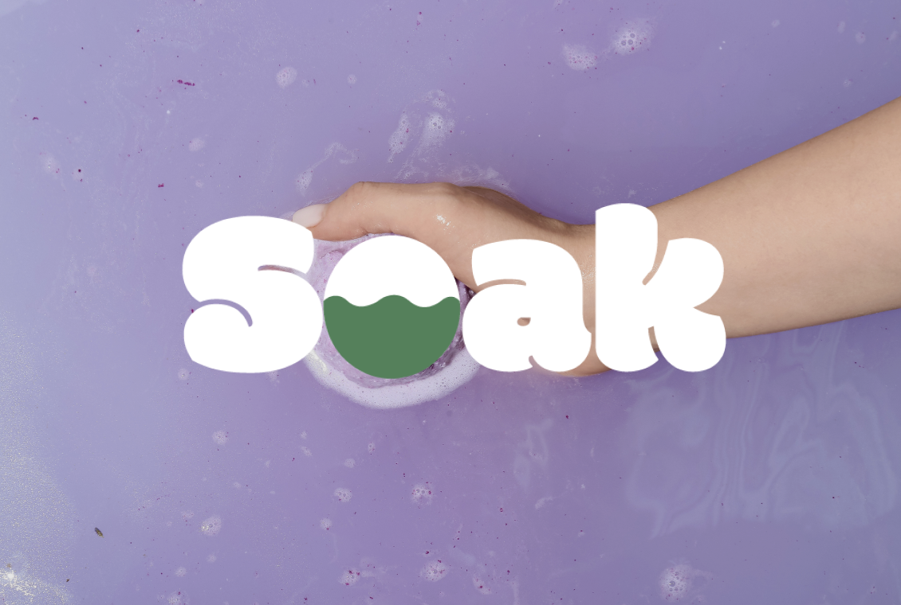
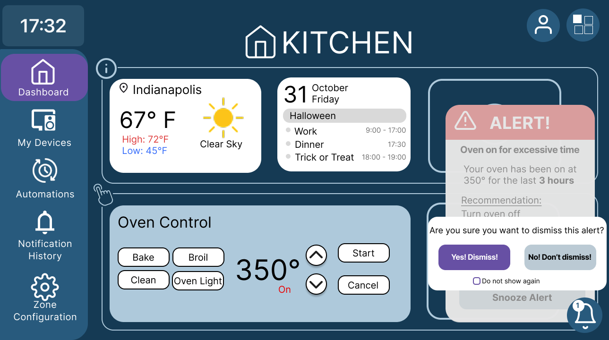
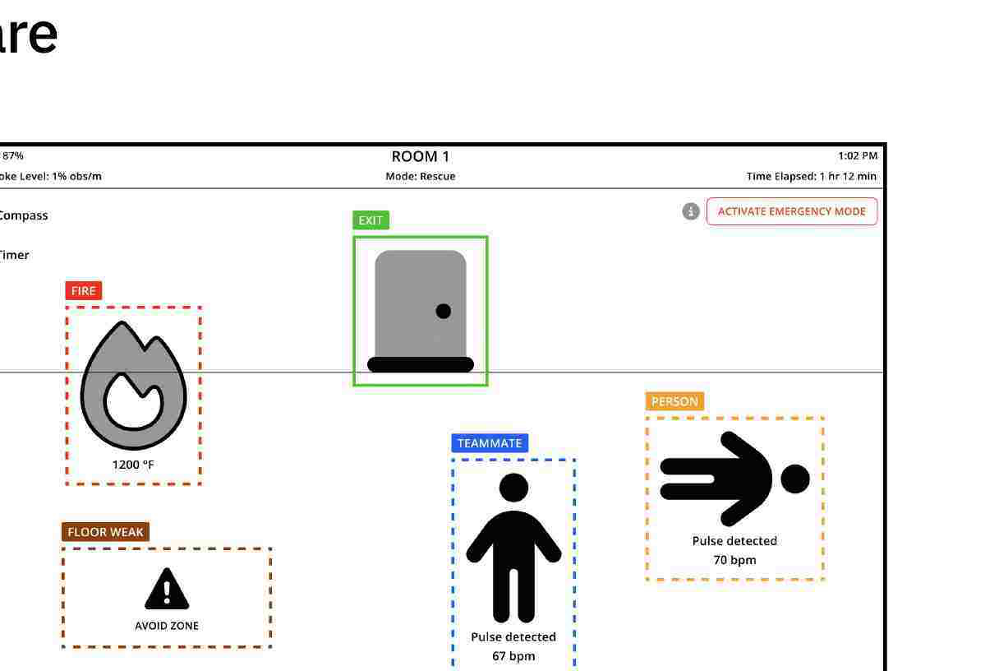

Work shaped by research and real constraints.
Class work, capstone, and product studies — who each one was for, what I learned, and what I would do next.
ParkSpotter
Helping theme park guests report issues in the moment, and giving staff a queue they can actually work.
Capstone · Research
Data Dignity
A calm personal data hub for Jordan — snapshot first, then one small privacy decision, without the alarm.
Inclusive design · Mobile
Spotify Social Hub
A fifth tab for posting a song, commenting in-thread, and dropping a track onto a friend’s playlist — without leaving Spotify.
Redesign · Social UXIU GymPal
A campus fitness companion for IU students who want today’s plan, a form check, and a history that isn’t homework.
Research · Mobile
Caregiver Hub
A shared care board for families — today’s tasks, who is free, and who can see the record — instead of texts and sticky notes.
Research · Mobile
Soak
A bath bomb storefront that has to feel like water through a screen — identity, journey, and a checkout we kept short on purpose.
Visual design · E-commerce
Kitchen Hub
A zone display for a smart home — weather, calendar, and an oven alert you can turn off, dismiss, or snooze — instead of another pile of apps.
Research · Display UX
Firefighter AR Mask
A visor HUD for near-zero visibility — thermal overlays, pulse and oxygen, and a green exit path — instead of navigating a fire by feel.
Research · AR / HUD